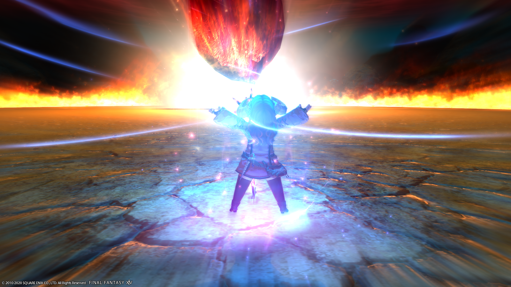

ME·TE·OR

天、坠、之、火。
那是在她眼里，她的天火前辈最为得意的法术。
那呼唤陨石从天而降的法术，她曾经穷尽一生也学不会，美丽却与她无缘。
是的，“曾经”。
或者说，究竟是不是“曾经”并无定论。因为没有人能够测定两个不同的世界之间的时间究竟谁快谁慢，谁先谁后。
艾雅法拉不清楚这些细节，她只知道这是一个没有矿石病的世界，她再不必像畏惧猛兽一样，害怕那扑在她身上，啃食她剩余生命的绝症。
但她没法高兴起来。
因为她的前辈，她的天火，她的…恋人。
还在那个世界，没有、也不太可能跟着她来到这边。
说到底，艾雅法拉是怎么来到这个世界的，她自己也不清楚。在原来的世界的她是死了所以灵魂来到这里了吗，还是成为了什么实验的被验者，被传送到这里来的呢。
她甚至觉得这一切会不会只是梦，她那所谓的另一半只是她的幻想。毕竟在这个世界，她只是个对魔法略知一二的冒险者，而不是什么高等学府的博士、重病缠身的术士…源石技艺的学徒。
没有任何实在的证据可以证明“她记忆中的天火前辈不是她的幻想”，就连天火那标志性的源石技艺“天坠之火”，也不过是从天而降的巨大陨石魔法而已。称不上是稀松平常的魔法，但会使用这个魔法的人也不是掰掰手指或是脚趾就能数清的。
仅对于这个坚信自己是来自另一个世界、并自称艾雅法拉的魔法师少女来说，这个魔法实在是有着太过特别的意义。
身上的淡紫色法袍、黑色长袜和短靴是她在这个世界能找到的、和“那个世界的自己”最相似的服装。尽管她已经再也无法回到那边、无缘和她心中的那个人再见哪怕一面。
她将能量聚合的法杖立在地上，从比过去更加娇小的身体两侧高举双手，就像“那个世界的自己”释放名为“火山”的源石技艺一样。
但这不是她自己的“火山”。
艾雅法拉不是“看起来像在呼唤什么一样”，而是“真的在呼唤些什么，只是她所呼唤的并不会真的降临”。
陨石会落下，会焚尽一切她的敌人，除了将她和她的前辈永远隔开的世界的障壁之外。
艾雅法拉高举双手的时候，是不是其实不是在呼唤陨石，而是在呼唤另一个世界的前辈呢。
只有她本人能知道，而她显然不会有兴趣提起她呼唤陨石的咒语，究竟是“Meteor”，还是“Skyfire”。